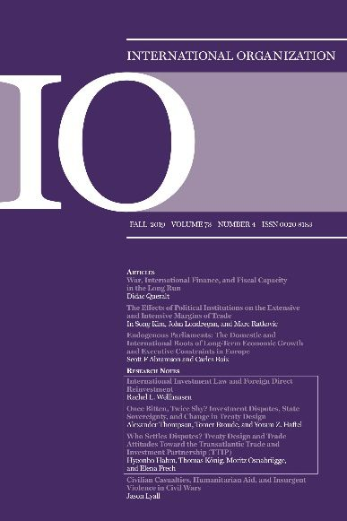

收录于合集

作品简介
【作者】 瑞秋·威尔豪森(Rachel L. Wellhausen)得克萨斯大学奥斯汀分校政治系副教授。伦敦政治经济学院政治经济学硕士，麻省理工学院政治系博士，曾为普林斯顿大学研究员。
【编译】 赵柳希（国政学人编译员，兰州大学政治与国际关系学院）
【校对】 缪高意
【审核】 兰星辰
【排版】 梁鑫昱
【来源】 Rachel L. Wellhausen（2019）. International Investment Law and Foreign Direct Reinvestment. International Organization , 73 (4), 839-858 doi:10.1017/S0020818319000225
期刊简介
International Organization （《国际组织》），简称“IO”，是一份经过同行评议的季刊，涵盖国际事务的领域包括：外交政策、国际关系、国际与比较政治经济学、安全政策、环境争端与解决、欧洲一体化、联盟模式与战争、谈判与冲突解决、经济发展与调整、国际资本流动等。它成立于1947年，由剑桥大学出版社代表国际组织基金会出版，主编是乔治城大学的Erik Voeten。根据Journal Citation Reports显示，2018年IO杂志影响因子为4.508，在91个国际关系类期刊中排名第一（1/9），在176个政治科学类期刊中排名第一（1/176）
国际投资法与外商直接再投资
International Investment Law and
Foreign Direct Reinvestment
内容提要
提供使争议各方重新合作的手段，是法律的目标之一 。人们普遍认为，国际投资法在很大程度上并没有做到使争议方重回合作；相反，受害外国投资者将起诉东道国作为其最后的手段并撤资。文章使用包含 **投资者与 国家间争端解决机制(ISDS)**仲裁和公司层面的双边投资的新数据库，证明 实际上，至少 31%的索赔投资者在东道国进行再投资(1990年至2015年)。在申请仲裁和管理经济部门的投资者中， 与再投资相关的重要因素包括申请人的法律策略； 申请人的不满及索赔成功的程度；以及仲裁后诉讼的发生率 。国际投资机制，除了在制度设计上有独特之处，实际上，该机制还有助于东道国解决时间不一致性问题，这一点符合对法律的标准预期。再投资的可能性是否高到足以使东道国强化对这一争议机制的承诺，仍待求证。
**文章导读
**
一、 投资者与国家间争端解决机制（ISDS）
成千上万的国际投资协议和合同援引了ISDS条款，这些协议与合同允许外国投资者在特设法庭直接起诉东道国涉嫌侵犯其财产权的行为，但没有正式的上诉程序，且无需母国的批准，也可避免用尽东道国地方法庭的救济。于东道国而言，仅仅是被起诉，便可能向第三方投资者发出信号——在东道国投资的政治风险增加，从而拉低外国投资的整体水平。如果这些政策可能对外国投资者产生不利影响，一个担心诉讼的东道国可能会推迟制定其他优惠政策，这种现象被称为“弱化监管”。此外，学者们发现很难证明东道国对ISDS
的承诺能吸引投资——这是东道国首先签字的关键动机。不出所料，随着更多仲裁的出现，对ISDS及其限制国家主权的潜力的反对声浪越来越大。数十个国家正在重新谈判授权条约，一些国家单方面退出，但奇怪的是，被起诉的120个国家中没有一个退出ISDS，这就引发了一个问题:ISDS有什么好处，尤其对东道国来说?理想状态下，ISDS将实现传统上法律所期望的目标。首要目标是协调各方的共同期望，防止潜在的争端。然而，如果发生争端，又无法通过非正式手段解决，法律的次要目标是通过事先商定的正式程序，通过制度化的谈判，促进当事各方恢复合作。在投资者-
国家争端的设定中，ISDS是一个程序:通过国际法庭的裁决，东道国和外国投资者协调由于东道国(所谓的)不利行为而应得到的赔偿数额。补偿可以达到“效率违约”，这是一个经济学术语:东道国采取了一项不利的行动，但支付补偿使投资者整体到其事前地位，解决时间不一致，这样的关系可以回到事前的状态。然而，ISDS在实现这些基本目标方面也做得很差，这一看法加剧了人们的反感。例如，美国贸易代表辩称，ISDS产生了“政府被起诉，从而可能在未来对投资者进行报复”，使其成为“典型的最后手段”。在这种最糟糕的情况下，选择通过正式的ISDS来解决争端，这本身就阻碍了合作的回归，迫使投资者退出。事实上，另一些人则指责索赔投资人永远不打算重新合作。正如一位律师在一篇新闻报道中所言:“你遇到很多肮脏的小偷，对他们来说，这是一种中奖的方式。”本文的研究任务验证ISDS是否持续（在可避免的情况下）的造成投资者退出东道国。事实上,我发现至少31%的索赔再投资者在仲裁期间或之后，保留在东道国的投资，或退出后回到东道国。至少31%的索赔投资者在东道国进行了再投资，这表明
国际投资法有时以符合法律标准期望的方式运作，促进了争议方重回合作。 然而，
31%的比例也表明了再投资并不是常态，那么这一比例是高还是低？ ******
**
二、 ISDS如何影响再投资率？
本文扩展了一个包含 729份ISDS仲裁申请的数据库(1990年至2014年)，其中投资者均引用ISDS条款，并公开仲裁。
通过分析，提出以下研究假设： 首先，在以合同仲裁的 58件案例中，有23例进行了再投资，比例为40%。
因此，根据合同而非条约裁决的案件更有可能与再投资有关。
在积极的第三方观察员在场的情况下，裁决程序比双边程序更为复杂，并可能造成当事各方无法和解的危险。相反，专门定制的合同条款对其他感兴趣的外部行为体来说是无法获得的，对他们所面临的政治风险提供的信息较少，因此裁决更有可能根据争端各方的利益进行，而不会受到其他影响的干扰。
由此得出研究假设 1： 如果根据投资者-国家合同而不是国际投资协议进行仲裁，ISDS索赔人更有可能进行再投资。
其次，法律索赔方式不包括被直接征收的 350件案例中，有110 例进行再投资，比例达31%，高于被直接征收案例的再投资率。
因此，东道国被指控的不利行为类型可能影响再投资，例如直接征收。
直接征收是指国家在没有给予足够补偿的情况下对财产进行征收，如在非自愿交易中购买财产或将其全部或部分国有化。最重要的是，国家直接征收会导致投资者拥有的财产（如果有的话）减少，进而导致其再投资能力变弱。
由此得出研究假设 2： 如果其法律索赔不包括被直接征收，ISDS索赔人更有可能进行再投资。 再次，在
200例没有裁定和375例裁定的案例中，再投资比例分别占比40%和28%。 因此，仲裁结果以及 对争端解决的满意程度
应与再投资相关 。 ****（在
裁定前和解，索赔人会得到补偿；即使是放弃诉讼的投资者也可能被认为获得了补偿，因为诉讼使东道国产生了成本。对于和解的投资者而言，其诉诸裁决的反事实结果是不可观察的。相比之下，诉诸仲裁的投资者，预期得到比和解更好的结果。然而，如果收到的裁决比预期的更糟糕，也比之前的和解提议更糟糕，那他们就会感到不满。
由此得出研究假设 3a与3b。
研究假设3a:与经过裁决的ISDS索赔人相比，如果其仲裁尚未完成法庭裁决，则ISDS索赔人更有可能进行再投资。研究假设3b:如果ISDS索赔人在裁决前解决了争端，或者赢得了有利于投资者的裁决，而非有利于东道国的裁决，则投资者更有可能进行再投资。
假设3b表明，索赔人投资者获得的赔偿越多，其再投资的可能性越大，这激发了假设4。在平均获赔比例到达索赔55.6%的84件案例中，有34件进行再投资，比例为41%，再投资率高于平均获赔12%和0%的案例比例。
研究假设 4:如果ISDS索赔人获得其所要求的赔偿数额的百分比越大，它就更有可能进行再投资 ****最后， 在没有执行强制程序的
413件案例中，有137件进了再投资，比例为33%，再投资比例高于撤销上诉或执行强制程序。
****虽然在国际投资法中没有正式的上诉程序，但在作出初步裁决后可以撤诉或强制执行程序。撤诉要求仅涉及程序问题，而非法律裁决的准确性问题。东道国或索赔投资人可以提起撤销诉讼，但这表明
ISDS仲裁没有解决投资者和东道国的问题，由此至少在短期以内，ISDS索赔人不太可能进行任何再投资 由此可以得出研究假设 5:
如果在法庭裁决后，没有出现撤诉或强制执行程序的情况下，ISDS索赔人更有可能进行再投资， **** 需强调，上述
“再投资行为”界定为以下几种情况：如果有明确证据表明索赔投资者退出东道国，但在2015年12月前返回东道国，则发生再投资行为；在ISDS仲裁期间及之后至少在东道国停留一年；或索赔投资者截至2015年12月在东道国有经营行为(无论在此期间发生了什么)。如果有证据表明索赔人的子公司符合这些标准，也算发生再投资行为。
此外，数据表明经济部门对再投资的影响显著：
****石油和天然气行业的再投资率是最高的。公用事业的再投资率也很高，主要包括供水和污水特许权、发电厂和输电网络。这是因为具有固定资产或某些场地特性的部门更容易受到侵犯产权的侵害。当东道国需要投资者的资本和专业知识时，这些部门的投资者可以事先谈判，达成有利的交易。然而，
随着时间的推移，投资者进行特定地点的投资，失去了可信的退出威胁。 尽管东道国采取了不利行动，但无法退出的外国投资者将更有可能进行再投资。
**
**
三、 检验假设
本文使用新数据来验证假设1至5，进行了一系列的t检验，并以回归的形式检验相关性。这种实证方法虽然不理想，但却合理且有用：无论因果关系是否存在，在新兴制度面临反对的政策空间中，相关性肯定与行为者有关。除了t检验，一系列多元回归也证明了相关假设。考虑到其因变量是二元变量，文章使用logit模型，以检验在规定时间内再投资是否发生。首先验证相关性，假设1(p=0.01),假设2(p=0.02)，假设3a (p=0.004)，3b(p=0.001),假设4(p=0.01)统计意义显著。假设5(p=0.11）统计意义为接近显著。然后，将所有变量组合纳入多元回归分析，没有被直接征收在模型1（基于合同的仲裁），模型4(获得索赔人要求的赔偿份额越大)，模型5（不撤诉或强制执行程序）中，统计意义始终显著，获得索赔人要求的赔偿份额与在模型2（没有被直接征用），模型4中统计意义显著。最后，在多元模型中，未完成裁定（假设3a），不存在令人信服的相关性。稳健性检验结论可靠。但学者们可能看重仲裁地点对再投资的影响。本文未就仲裁地点这一方面进行分析，但也认可仲裁地点可能会对再投资有重大影响。然而，律师的看法可能最能说明问题，他们普遍认为，场地选择更多的是一种便利，而非战略，因为法律是由所援引的条约或合同决定的，而非场地。
四、 研究结论 ****
对投资者来说，考虑到援引ISDS不一定是原告的最后手段，投资者选择正式的国际仲裁就更令人困惑了。在受害投资者对再投资有可信偏好，以及东道国对这种偏好的充分了解的情况下，本文的模式为选择产生了可以检验的洞见，。在这种情况下，投资者和东道国可能发现，在ISDS程序中达成正式的和解，更能促进效率违约，这也符合法律的基本目标。 一个投资者可能会带来一个效率驱动的仲裁，正是因为仲裁促进了未来的合作， 这与投资者选择进入ISDS总体上是“肮脏的小偷”的论点形成了鲜明的对比。对东道国来说， 效率驱动型 的仲裁可能比“ 偷窃式 ”的仲裁具有更低的政治风险——后者或许是根据某项国际条约提起的，涉及巨额货币索赔，以国有化作为理由，最后投资者选择离开，再也不回来。 那么效率驱动型仲裁的可能性对东道国激励政策有什么意义？ 考虑到东道国违约的形式和程度是预期结果的内生因素，东道国对再投资感兴趣但顾虑违约的话，本文中验证的法律相关性会增加东道国的信心。越有可能恢复合作，东道国就越有信心，认为它现在可以采取时间不一致的行动，然后通过 ISDS-裁决的补偿来弥补时间不一致行为 。在ISDS中被起诉有时甚至可能是东道国计划的一部分，这种逻辑与在ISDS中被起诉作为各国重新谈判或终止IIAS的决定因素，是异曲同工的。分析投资者对 ISDS的选择和东道国对合同违约的选择对于理解国际投资法的政治影响及其对外国直接投资的影响是至关重要的 。如果选择ISDS的动机从高效到“混乱”各不相同， 那么 ISDS仲裁对市场和政治的影响可能也各不相同。 ****例如，仲裁背后的动机可以向感兴趣的市场参与者发出有关政治风险的微妙信号。仲裁背后的动机也显示了对母国和东道国外交关系的不同影响。每个 ISDS的研究必然只关注投资者-国家冲突现象的一小部分，但是对这部分的选择关注使我们能够使用ISDS来洞察投资者- 国家冲突中不可观察的群体。本文的研究不能证明现行的ISDS条款是组织投资者- 国家争端裁决的最佳方式。而事实上，国际投资机制的有用性和公平性是许多的学术和公众辩论的主题。本研究详细说明了再投资的一个可能的好处，并提供了相关证据。 在目前的体制内，有益的体制改革可能侧重于在实行 ISDS的情况下，最大限度地增加再投资的可能性。 而不是意味着双边投资者- 国家关系的结束，国际投资法有时还能使受害投资者重新投资，重新焕发活力。
**_本文由国政学人独家编译推荐，文章观点不代表本平台观点，转载请联系授权。_**